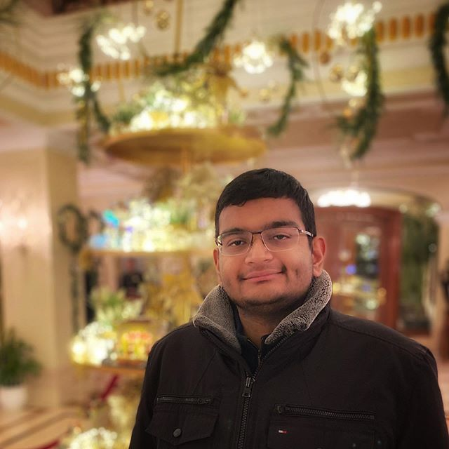

Aditya Dixit
Computer Science and Economics Major, University of San Francisco
Expected Graduation: May 2021
adixit3@dons.usfca.edu
I am currently at The University of San Francisco. I am double majoring in Computer Science and Economics. I am a New Zealand (NZ) citizen and an Overseas Citizen of India (OCI). Living and growing up in different places in the world, has greatly broadened my perspective of accepting things and people as they are. I perceive that I am blessed as I felt very integrated and accepted in every society I lived in and learnt from. The more I learnt, the more curious I got. I love to meet, interact and gain knowledge. I am always considerate towards accepting things even diversities. Always very keen to broaden and further improve my perspective and now I am positively aspiring to achieve this through my academic passions. I love to travel, take road trips and explore new places. During my free time, I like to cook and bake, listen to music, read and watch movies. I also love to take photos, and you can find more under my pictures link.